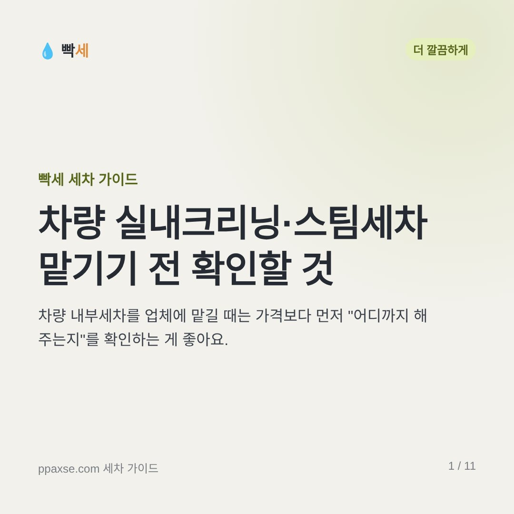
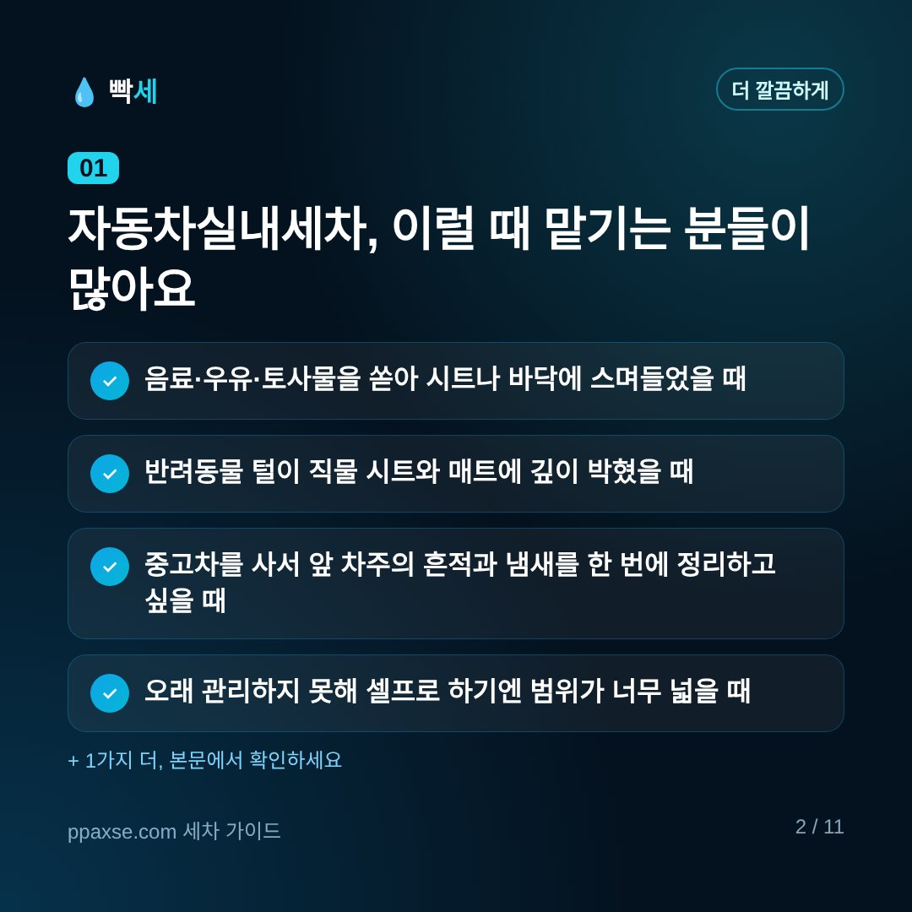
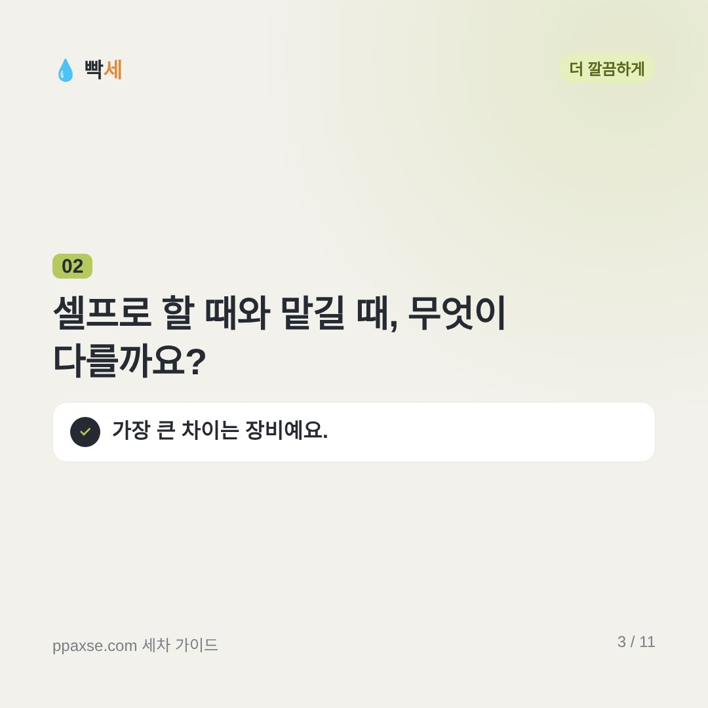
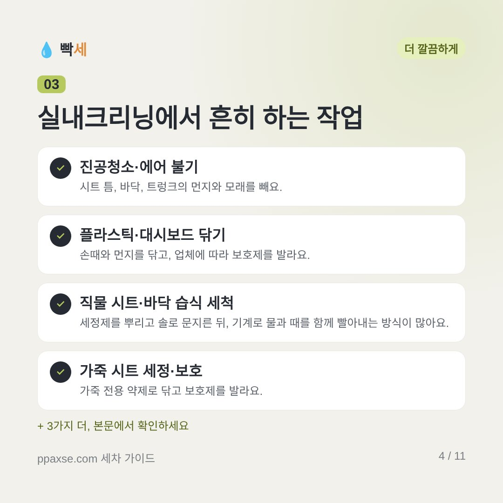
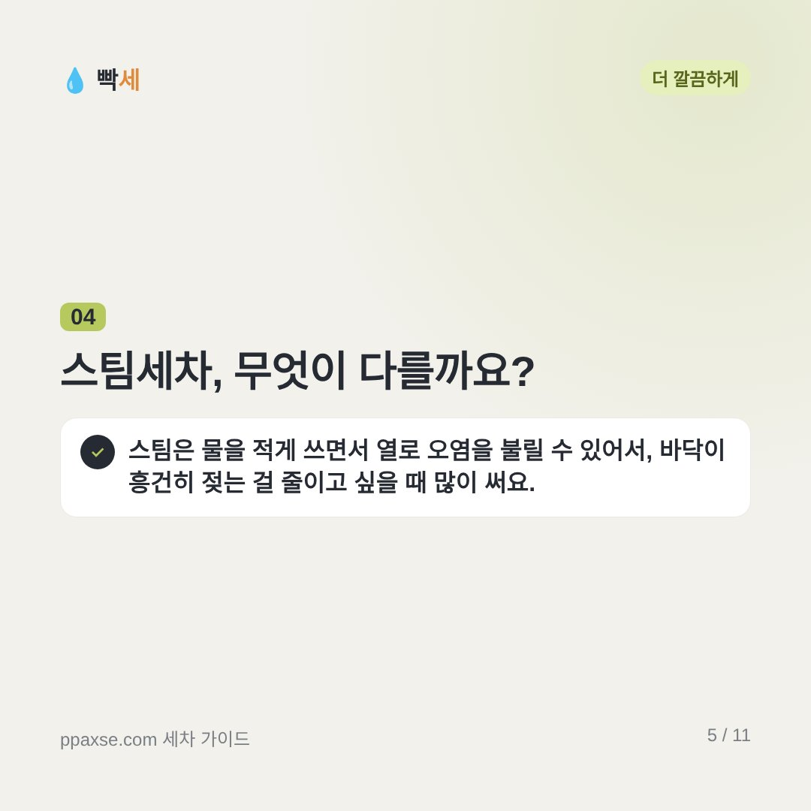
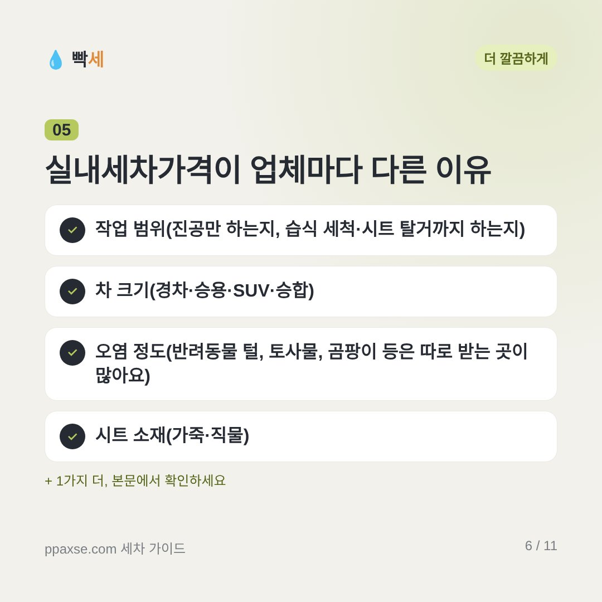
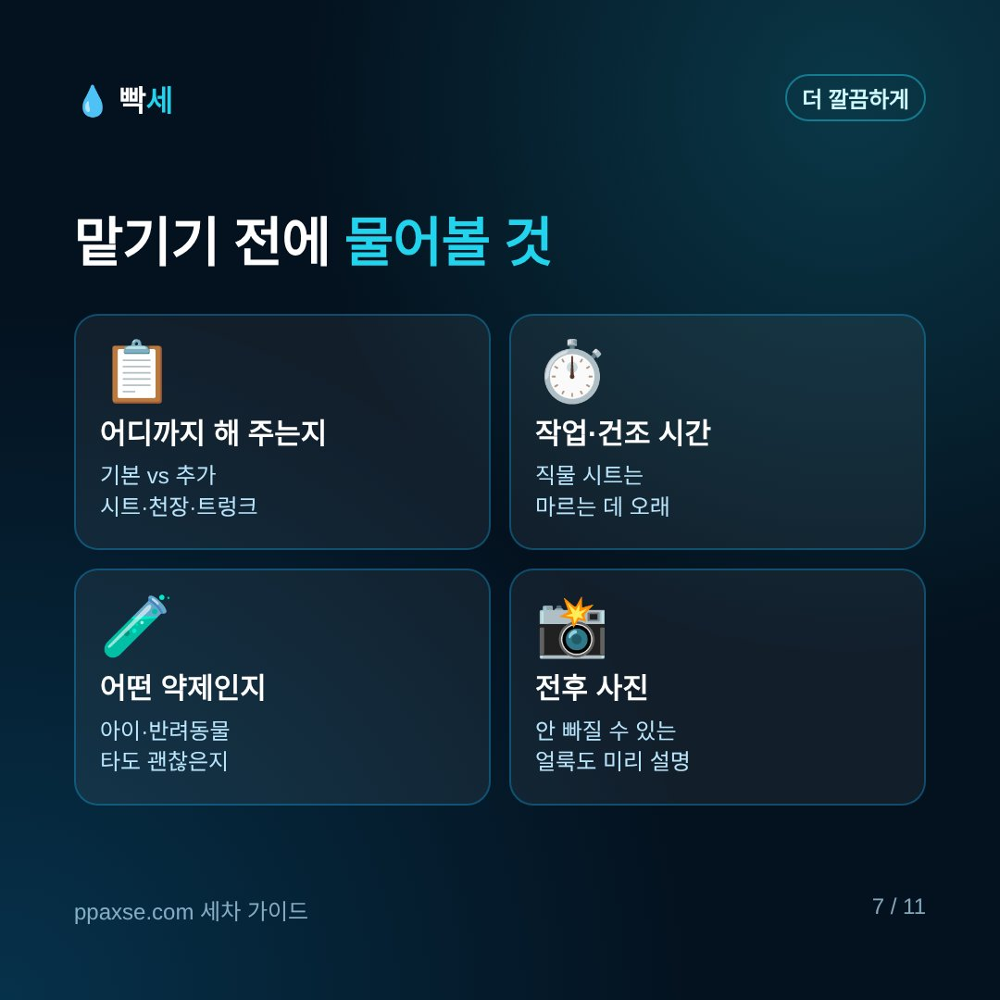
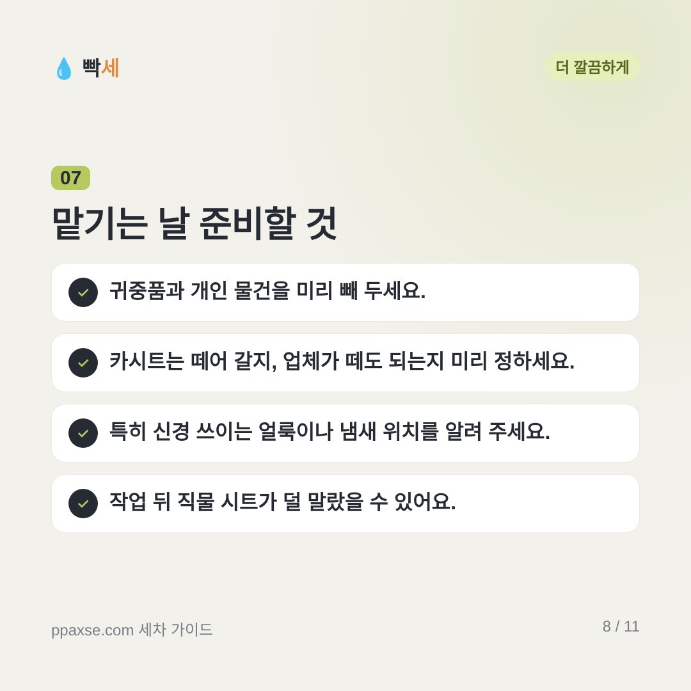
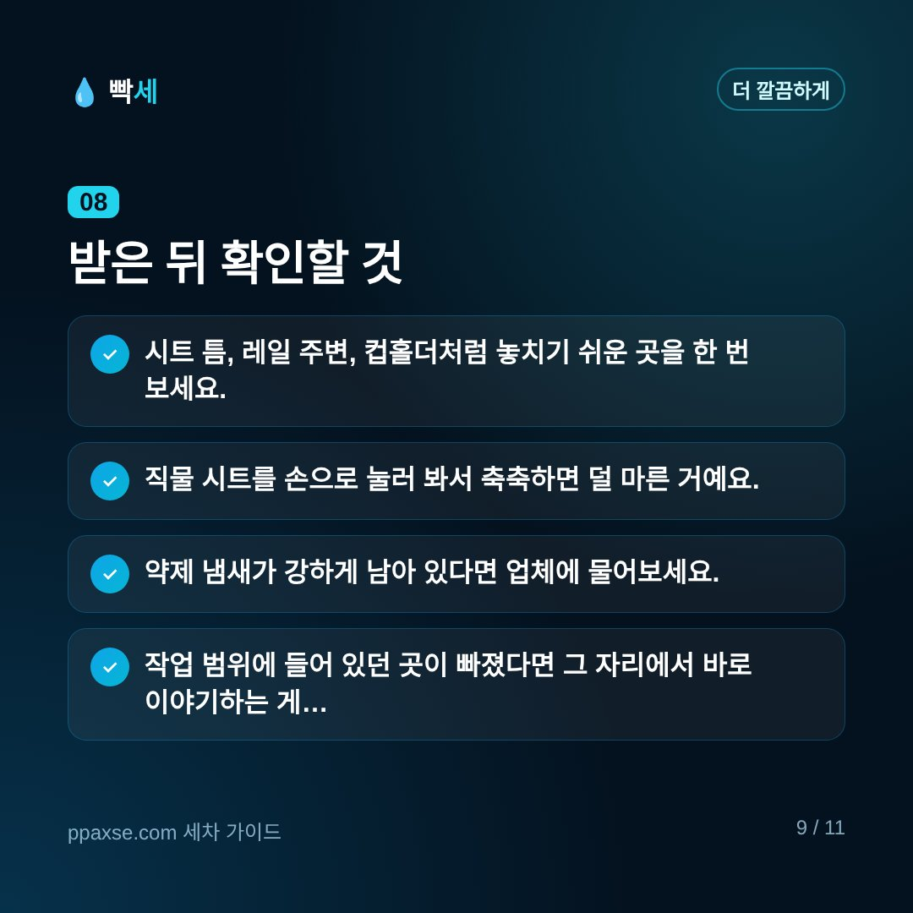

차량 실내크리닝·스팀세차 맡기기 전 확인할 것
차량 내부세차를 업체에 맡길 때는 가격보다 먼저 "어디까지 해 주는지"를 확인하는 게 좋아요. 같은 '실내크리닝'이라도 진공청소와 닦기만 하는 곳이 있고, 시트를 습식으로 세척하거나 스팀으로 소독하고, 시트를 떼어 내 바닥까지 닦는 곳도 있어요. 하는 일이 다르니 가격도 다를 수밖에 없어요.

셀프세차장에서 직접 하는 실내 세차는 셀프세차장에서 실내 세차까지에 정리해 두었어요. 이 글은 맡기는 쪽에 초점을 맞춰, 업체에 물어볼 것과 미리 알아 두면 좋은 점을 모았어요.
자동차실내세차, 이럴 때 맡기는 분들이 많아요

- 음료·우유·토사물을 쏟아 시트나 바닥에 스며들었을 때
- 반려동물 털이 직물 시트와 매트에 깊이 박혔을 때
- 중고차를 사서 앞 차주의 흔적과 냄새를 한 번에 정리하고 싶을 때
- 오래 관리하지 못해 셀프로 하기엔 범위가 너무 넓을 때
- 아이 카시트 주변처럼 틈새 오염이 심할 때
반대로 먼지·모래를 털어 내는 정도라면 셀프세차장 진공청소기와 에어건으로도 충분한 경우가 많아요. 빡세는 평소엔 셀프로 가볍게, 스며든 얼룩·냄새처럼 셀프로 안 되는 일이 생기면 맡기는 쪽을 기본으로 권해요. 정답이라기보다 빡세가 생각하는 해답에 가까워요.
셀프로 할 때와 맡길 때, 무엇이 다를까요?

가장 큰 차이는 장비예요. 셀프세차장의 진공청소기는 표면의 먼지를 빨아들이는 데 좋지만, 시트 속까지 스며든 얼룩을 물과 함께 빨아내는 습식 장비는 없는 곳이 많아요. 업체는 이런 장비와 소재별 약제를 갖추고 있어서 셀프로는 어려운 오염을 다룰 수 있어요. 반대로 셀프는 내가 원하는 때에, 원하는 만큼 할 수 있다는 장점이 있어요.
실내크리닝에서 흔히 하는 작업

- 진공청소·에어 불기 — 시트 틈, 바닥, 트렁크의 먼지와 모래를 빼요.
- 플라스틱·대시보드 닦기 — 손때와 먼지를 닦고, 업체에 따라 보호제를 발라요.
- 직물 시트·바닥 습식 세척 — 세정제를 뿌리고 솔로 문지른 뒤, 기계로 물과 때를 함께 빨아내는 방식이 많아요.
- 가죽 시트 세정·보호 — 가죽 전용 약제로 닦고 보호제를 발라요.
- 스팀 작업 — 뜨거운 증기로 틈새의 때를 불리거나 표면을 닦아요. '실내스팀세차'라는 이름으로 많이 불러요.
- 천장(헤드라이너) 닦기 — 천장은 접착이 약해 물을 많이 쓰면 처질 수 있어서, 하는 곳과 안 하는 곳이 있어요.
- 시트 탈거 세척 — 시트를 떼어 바닥 카펫과 레일 주변까지 닦는 작업이에요. 시간이 오래 걸려요.
에어컨 냄새까지 함께 잡고 싶다면 에바크리닝(에어컨 속 부품 세척)을 묶어서 하는 곳도 있어요. 실내를 아무리 닦아도 에어컨을 켤 때만 냄새가 난다면 원인이 에어컨 쪽일 수 있으니 함께 물어보세요.
스팀세차, 무엇이 다를까요?

스팀은 물을 적게 쓰면서 열로 오염을 불릴 수 있어서, 바닥이 흥건히 젖는 걸 줄이고 싶을 때 많이 써요. 다만 스팀이 모든 소재에 좋은 건 아니에요. 열에 약한 부품, 일부 가죽, 전자 장치 주변에는 조심해서 써야 해요. 그래서 업체마다 스팀을 쓰는 범위가 달라요. 맡길 때 "어느 부분에 스팀을 쓰는지"를 물어보면 좋아요.
실내세차가격이 업체마다 다른 이유

실내세차가격이나 스팀세차가격, 내부세차비용을 검색해 보면 차이가 커서 헷갈려요. 보통 아래 요인에 따라 달라져요.
- 작업 범위(진공만 하는지, 습식 세척·시트 탈거까지 하는지)
- 차 크기(경차·승용·SUV·승합)
- 오염 정도(반려동물 털, 토사물, 곰팡이 등은 따로 받는 곳이 많아요)
- 시트 소재(가죽·직물)
- 작업 시간과 건조 시간
그래서 숫자 하나만 비교하기보다, 같은 범위를 기준으로 비교하는 게 좋아요. 정확한 가격은 차량 상태를 보고 정하는 곳이 많으니, 사진을 보내 미리 물어보는 분들도 있어요.
맡기기 전에 물어볼 것

- 기본 작업에 무엇이 들어가고, 무엇이 추가인지
- 시트·바닥·천장·트렁크 중 어디까지 하는지
- 시트를 떼어 내는지, 그대로 두고 하는지
- 작업 시간과 건조 시간은 얼마나 되는지(직물 시트는 마르는 데 시간이 걸려요)
- 어떤 약제를 쓰는지, 아이나 반려동물이 타도 괜찮은지
- 작업 전후 사진을 보여 주는지
- 얼룩이 완전히 빠지지 않을 수 있는 경우를 미리 알려 주는지
오래된 얼룩이나 이염은 업체에서도 완전히 빠지지 않을 수 있어요. 미리 솔직하게 이야기해 주는 곳이 오히려 믿음이 가는 경우가 많아요.
맡기는 날 준비할 것

- 귀중품과 개인 물건을 미리 빼 두세요. 트렁크도요.
- 카시트는 떼어 갈지, 업체가 떼도 되는지 미리 정하세요.
- 특히 신경 쓰이는 얼룩이나 냄새 위치를 알려 주세요.
- 작업 뒤 직물 시트가 덜 말랐을 수 있어요. 받은 날에는 창문을 조금 열어 환기하는 분들이 많아요.
받은 뒤 확인할 것

- 시트 틈, 레일 주변, 컵홀더처럼 놓치기 쉬운 곳을 한 번 보세요.
- 직물 시트를 손으로 눌러 봐서 축축하면 덜 마른 거예요. 덜 마른 채 문을 닫아 두면 냄새가 날 수 있으니 환기해 주세요.
- 약제 냄새가 강하게 남아 있다면 업체에 물어보세요. 며칠 환기하면 줄어드는 경우가 많아요.
- 작업 범위에 들어 있던 곳이 빠졌다면 그 자리에서 바로 이야기하는 게 서로 편해요.
내 주변 실내크리닝 하는 곳 찾기
실내크리닝은 손세차장이나 디테일링샵에서 하는 곳이 많아요. 손세차장 이용 전 확인할 점은 손세차란?에도 정리해 두었어요. 빡세 지도의 지역별 세차장 모음에서 우리 동네 손세차장·디테일링샵을 찾아보세요. 맡겨 본 곳이 있다면 어떤 작업까지 해 줬는지 한마디로 남겨 주시면, 다음 분이 고르는 데 큰 도움이 돼요.
셀프세차·노터치·손세차를 종류별로 골라 보고, 폼건·온수·하부세차 같은 시설 정보도 확인할 수 있어요.
🗺️ 세차장 지도 열기✏️ 자주 가는 세차장에 한마디 남기기🎁 한마디를 남기면 가입 없이도 매주 기프티콘 추첨에 응모돼요.